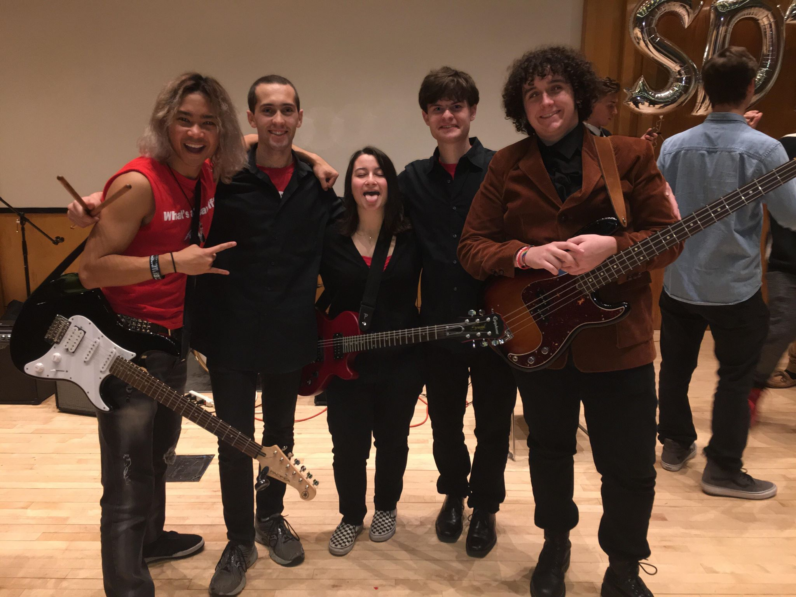

About Me

My passions include Computer Science, Music, Software Development and Game Programming.
I have been programming for 8 years. C, TypeScript, Python, Java are my go-to programming languages. Other programming languages I use include C#, and JavaScript. As the Event Coordinator of Stony Brook Game Developers, I enjoy sharing my knowledge with other students.
I have been playing the drums for 10 years. When I'm not coding, I play the drum set, tenor drums, timpani, and snare drum. I'm a member of the Spirit of Stony Brook Marching Band drumline and a college rock band called Spirit.
I enjoy programming and designing video games in my free time. In my free time, I like to reproduce classic games such as Pong and Space Invaders in a game engine called Unity. Last Spring, I won second place in the Stony Brook Game Developers 'Ren-Py' Competition with a game called Blind Run.
Computer Science
 photo credit: Major League Hacking
photo credit: Major League Hacking
I am studying Computer Science at Stony Brook because my career goal is to become a software engineer. Some of the courses that I have completed include AP Computer Science, Object Oriented Programming, Data Structures & Algorithms, Foundations of Computer Science (Discrete Mathematics), and Principles of Database Systems. My coursework has taught me how to apply the content that I have learned into practical programming skills that include an organized and thoughtful approach to software design, coding, testing, and debugging.
Selected Projects
Be sure to follow me on GitHub for more projects.
Music

I currently play drum set for a Rock Band called Spirit as well as the Stony Brook Pep Band. I also play tenor drums for the Spirit of Stony Brook Marching Band.
My grandfather bought me my first drum set when I was nine years old. That drum set changed my life in many ways. Having been involved in music groups throughout my life, I have developed many skills such as teamwork, companionship, and leadership.
Why Me?
Besides my programming skills, I have many qualities that would make me an exceptional asset to any organization or team. First and foremost is my ability to focus on tasks, problems or projects. I have an extremely strong work ethic and know how to prioritize my time to focus on the project at hand. I am a quick study and love to learn new techniques, languages, and approaches to programming. Lastly, overcoming adversity is a skill I learned early on in life. Those struggles have served me well in the world of programming.
Contact